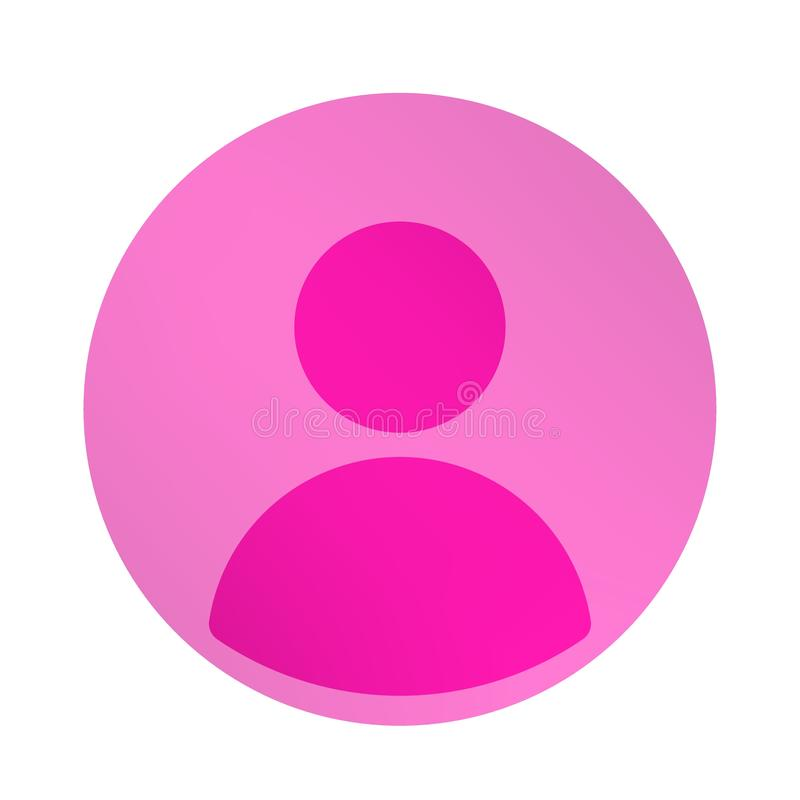

Name :
NAGA HARITHA RAGHAVI MATTUPALLI
Regd.No :
17BQ1A05E0
Father Name :
Phani Siva Kumar
E-mail :
haritharaghavi05032001@gmail.com
Address :
19-15-80,3rd Lane,I.P.D.Colony,Sangadigunta,Guntur-522003Career Objective :
Looking for a challenging role in a reputable organization to utilize my technical, database, and management skills for the growth of the organization as well as to enhance my knowledge about new and emerging trends in the IT sector.
Technical Skills
- Programming Languages : Python,Java,C,C++
- Web Technologies : HTML,CSS,JS,BootStrap
- Operating Systems : Windows,Linux
Education :
| Sno | Qualification | Institute | Passout Year | Percentage |
|---|---|---|---|---|
| 1 | Secondary Education(X) | Sri Chaitanya School | 2015 | 9.8 CGPA |
| 2 | Intermediate | Sri Chaitanya Junior College | 2017 | 95% |
| 2 | Btech 3rd year | Vasireddy Venkatadri Institute of Technology | 2021 | 8.1 CGPA |
Strengths :
- Good oral, written & presentation skills
- A high tolerance of stress and enjoys responsibilities
- Quick learner with good grasping ability
- Action-oriented and result-focused
- Great time management skill